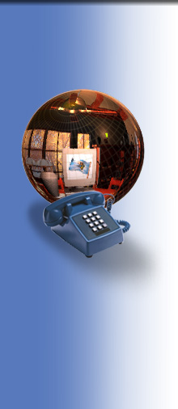

Uno de mis pasatiempos y habilidades favoritas es el de la Programación. Actuamente, soy un programador
avanzado en lenguajes como JavaScript, HTML,
Dynamic HTML(DHTML)
y Visual Basic. Asimismo, domino la extensión del HTML conocida como Cascading Style Sheets(CSS),
u Hojas de Estilo en Cascada.
Respecto a JavaScript y HTML, ambos son lenguajes que nos
permiten crear páginas web interactivas y dinámicas; tanto HTML como
JavaScript, son lenguajes
del lado del cliente, es decir, que las páginas Web creadas con estos lenguajes se ejecutan integramente en
la computadora del navegante. Al combinarlas con DHTML y CSS obtenemos un completo control sobre los distintos
elementos del navegador y de la página visualizada. Al respecto, domino las propiedades y métodos de los objetos
de Javascript, y utilizo frecuentemente características tales como el manejo de capas(layers), el trabajo
con marcos(frames) y el trabajo con formularios,
cookies y Creación de controles
ActiveX, por poner solo unos ejemplos.
Aparte de las páginas dinámicas en el cliente, exísten también las páginas del lado del Servidor; sobre dicho tema,
actualmente tengo conocimientos elementales del lenguaje ASP- Active Server Pages, una tecnología
desarrollada por Microsoft para crear páginas activas del servidor. Con este lenguaje, actualmente puedo trabajar
con características básicas tales como la creación y borrado de cookies, el
acceso a bases de datos,
y el uso de los comandos básicos de SQL Server para modificar bases de datos.
Finalmente, respecto a Visual Basic, aunque entiendo perfectamente la
lógica de este lenguaje, no soy un experto en el tema, aunque poseo conocimientos de nivel intermedio
y cada día aprendo algo nuevo sobre VisualBasic. Este lenguaje permite crear aplicaciones para Windows
con solo un puñado de instrucciones.
A continuación te recomiendo los libros que he leído sobre el tema:
HTML 4, 4ed.,, Elisabeth Castro, Editorial Prentice Hall, España, 2000
Diseño de Páginas Web interactivas con JavaScript, Juan Carlos Orós, Editorial Alfaomega-rama, México, 1999
Aprenda Visual Basic 6 Ya, Michael Halvorson, Editorial McGraw-Hill, España, 2000
Enciclopedia de Microsoft Visual Basic 6, Francisco Javier Ceballos, Editorial McGraw-Hill, México, 2000
Visual Basic 5, Curso de Programación, Francisco Javier Ceballos, Editorial Computec-rama, México, 1998
Microsoft FrontPage2000, Claudio Veloso, Editorial Prentice Hall, Brasil, 2000
Guía de Aprendizaje de JavaScript, 3ed.,, Tom Negrino, Dori Smith, Editorial Prentice-Hall, España, 2000
Cree su Página Web, Vols. I y II, Johann-Christian Hanke,, Serie PC Cuadernos Técnicos, Dinamarca, 2001
CSS - Webs con Estilo, John Maxwell, Serie PC Cuadernos Técnicos, Dinamarca, 2001
Iniciación a JavaScript, Martin Baier, Serie PC Cuadernos Técnicos, Dinamarca, 2001
CorelDRAW! 9,, Martín Díaz Cortés, Manuales USERS, Argentina, 2000
|
Respecto a AutoCAD 2002, simplemente debo señalar que se trata del programa de Dibujo Asistido por Computadora (CAD) más
popular del mundo, y uno de los más completos. En lo personal, tuve mi primer acercamiento a AutoCAD hace solo unos
meses, primero durante un Diplomado de 3 meses y 60 horas, lo que me permitió tener un primer acercamiento, aunque fuera
incompleto, hacia este programa. Posteriormente, pude profundizar más en el programa gracias a dos excelentes
libros, los cuales cito para referencia más abajo.
En el CD que contiene este sitio usted encontrará algunos de mis Dibujos reaalizados con AutoCAD 2002. Observe las
indicaciones contenidas al respecto en el envase del CD.
Entre las características avanzadas de AutoCAD2002 con las que he trabajado últimamente, se encuentran las
siguientes: Polilíneas 2D y 3D, mallas y caras 3D, creación e impresión de múltiples ventanas flotantes en espacio papel,
uso de capas múltiples, creación de bloques y cajetines, edición avanzada de textos, creación de sólidos 3D,
representación fotorrealista(renderizado) de modelos 3D, creación de nuevas barras de herramientas y creación de archivos
de script, personalización de comandos de AutoCAD con VisualBasic.
Si desea aprender más sobre AutoCAD, le recomiendo el Tutorial que encontrará
en la sección de Tutoriales de este sitio. Asimismo, deseo
recomendarle los siguientes libros:
AutoCAD2000 Avanzado, J. López Fernández, J. A. Tajadura Zapiraín, Editorial McGraw-Hill, España, 1999
AutoCAD2002, Iniciación y Referencia, José Dominguez alconchel, Editorial McGraw-Hill, España, 2002
|

Respecto a las redes de Computadoras, cursé un Diplomado, con cuatro meses de
duración y 150 horas efectivas, entre teoría
y práctica, ofrecido por la Universidad Juárez de Tabasco.
Este diplomado me permitió obtener una mejor perspectiva del funcionamiento de las redes de cómputo.
Especialmente, me permitió tener una cierta idea de la función desempeñada por los distintos dispositivos de red, tales como
Hubs, Puentes, Gateways, Ruteadores, Tarjetas de red, etc. Asimismo, adquirí nociones referentes a las diversas tecnologías
de redes LAN y WAN (Ethernet, Fast Ethernet, FDDI, Token Ring, etc.)
Sin embargo, en lo personal, lo que más me gustó del Dpiplomado fueron los módulos referentes a la gestión de Redes bajo Windows NT, así como el módulo acerca de Gestión de Redes
bajo LINUX. Estos módulos fueron los que
más me interesaron, y actualmente continúo leyendo y aprendiendo más sobre los mismos. Respecto a Windows NT,
he practicado la creación y gestión de cuentas de usuario, así como de grupos locales y grupos globales.
Asimismo, el aspecto de la seguridad y planeación de cuentas de usuario.
Sobre LINUX, examinamos la versión RedHat 7, y los entornos gráficos GNOME y KDE. Asimismo, examinamos los
comandos básicos del Shell, a nivel de línea de comandos. Mi promedio en los cinco módulos
de dicho Diplomado fué de 9.4, y el diploma que avala dichos estudios me fué entregado
a fines del mes de Mayo.
|